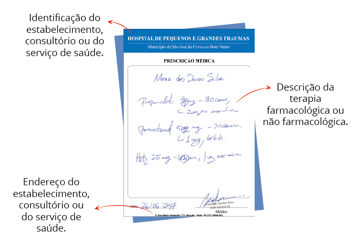
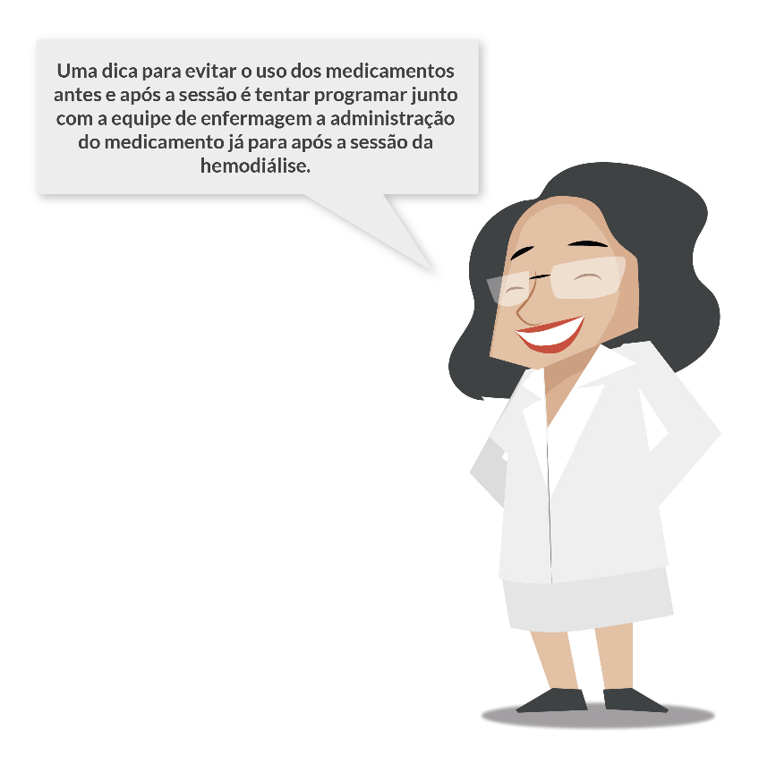
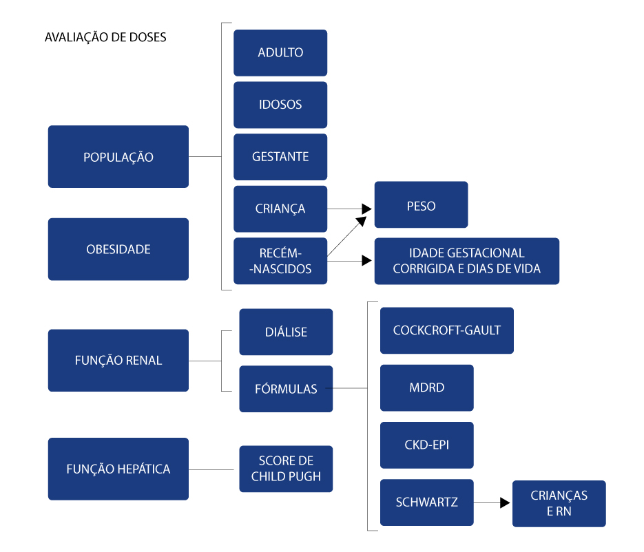
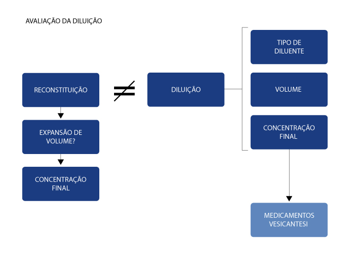
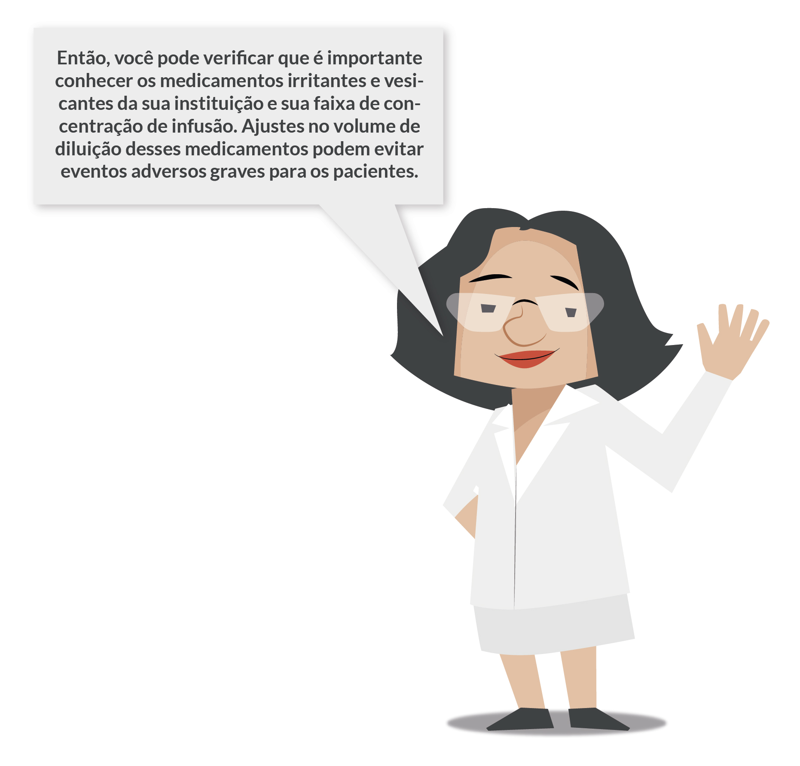
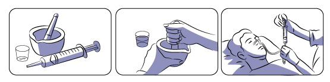
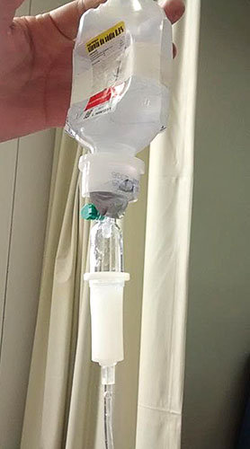

1 - Identificação do paciente, prescritor, data e instituição
Antes de tudo, deve-se conferir a correta identificação do paciente,
prescritor, data e instituição. Isso é fundamental para garantir o
destino correto do tratamento solicitado, baseado na avaliação
médica do dia em que foi emitida a prescrição. A omissão da data da
prescrição pode levar o paciente a fazer uso de medicamentos que não
sejam necessários para a sua atual condição clínica.
A correta identificação do paciente faz parte das metas
internacionais para a segurança do paciente, sectionulgada pela
Organização Mundial da Saúde (2013) em parceria com a Joint
Commission International. A prescrição deve ser realizada por meio
da identificação do nome completo do paciente, sem abreviaturas,
número do prontuário ou registro do atendimento, leito, serviço,
enfermaria/apartamento e andar/ala, assim como a identificação da
instituição de saúde. A identificação do prescritor deve estar
legível para conferir autenticidade à prescrição.

2 - Prescrição de medicamentos com nomes semelhantes
Faça um exercício mental...Você se lembra de medicamentos com nomes
tão semelhantes que podem confundir profissionais de saúde e
pacientes? Tais medicamentos são conhecidos como look-alike e
sound-alike, que são medicamentos com nomes muito semelhantes e
podem gerar confusões na prescrição, dispensação e administração dos
medicamentos e resultar em erros de medicação, que podem ser fatais,
principalmente se envolver medicamentos de alta vigilância. O
Instituto para a Prática Segura de Medicação (ISMP) divulga uma
lista desses medicamentos e propõe medidas para a diferenciação
desses medicamentos para reduzir erros de medicação, como o uso de
destaque (letra maiúscula ou negrita) na escrita da parte do nome
que os diferencia. Alguns exemplos estão descritos a seguir:
LevoMEPROMAzina x LevoDROPROPIzina
ClorproMAZINA x ClorproPAMIDA
EPINEFrina x EFEDrina
DULoxetina x FLUoxetina
Fentanil x SUfentanil
O farmacêutico clínico precisa estar atento e conhecer os
medicamentos de nomes semelhantes da sua instituição para orientação
da equipe a fim de evitar erros de medicação.
3- Indicação e contraindicação
Após a conferência da identificação do paciente, prescritor,
instituição e medicamentos prescritos é preciso avaliar a maneira
com que os medicamentos foram prescritos (indicação, dose, diluição,
frequência posológica, tempo de infusão, entre outros). Vamos lá?
Ao validar a prescrição de medicamentos de um paciente, você deve
conhecer minimamente o motivo da internação e/ou diagnóstico para
avaliar a necessidade de uso de medicamentos e assim, auxiliar a
equipe médica na tomada de decisões, por exemplo, quanto à sugestão
de uma alternativa terapêutica ou até mesmo a sugestão da inclusão
de medicamentos que julguemos necessário ou exclusão de medicamentos
já desnecessários considerando sua condição clínica atual.
É comum na rotina de trabalho do farmacêutico passar por situações
de falta de determinados medicamentos, tanto por problemas na
logística da instituição como por problemas de produção da
matéria-prima e, nestas situações, é necessário que você conheça
alternativas terapêuticas com evidência científica equivalente para
sugerir à equipe.
É muito importante também que você tenha informações quanto à
história de alergias e reações adversas a medicamentos que os
pacientes relatem para que, se necessário, possamos intervir
sugerindo uma alternativa terapêutica adequada. Um alerta na
prescrição de medicamentos informando a presença de alergias ou a
identificação do paciente por meio de pulseira diferenciada é
fundamental para a comunicação entre a equipe de saúde, evitando
erros de medicação.
Algumas condições clínicas contraindicam o uso de determinados
medicamentos, e é fundamental que essas situações sejam conhecidas
para que o farmacêutico dispense os medicamentos com segurança. Um
exemplo de condição que devemos conhecer para avaliar o uso de
medicamentos é a gestação! Alguns medicamentos possuem
contraindicação absoluta para uso em gestantes, pois podem provocar
malformações graves em todos os estágios da gravidez, como exemplo,
o conhecido caso de focomelia devido ao uso da talidomida, você
lembra?
4 - Doses
Verificar a dose de cada medicamento prescrito é essencial no
processo de validação das prescrições, pois se trata de uma fonte
importante de erros graves, que pode induzir a uma toxicidade ou
falha terapêutica e interferir de forma muita negativa no
tratamento. A familiaridade do farmacêutico com as doses usuais dos
medicamentos comumente utilizados em seu local de trabalho é muito
importante e pode ser adquirida com estudo e prática no dia a dia de
trabalho.
A verificação das doses é particularmente importante quando falamos
das populações especiais, como os idosos, gestantes, crianças e
recém-nascidos!
Você lembra que essas populações possuem farmacocinéticas e
farmacodinâmicas particulares? Pois é, é preciso ter conhecimento
dessas condições específicas de cada população, pois são tomadas
como base para o cálculo das doses mais adequadas para cada
situação. Para essas populações, é necessário, muitas vezes,
conhecer algumas informações, como o peso e a superfície corpórea,
que são utilizadas para o cálculo das doses de vários medicamentos.
Na Unidade 3 deste módulo, você aprenderá como calcular as doses
para neonatos seguindo os protocolos definidos. Aguarde!
Além disso, é importante conhecer a função renal e a função hepática
dos pacientes para verificar a necessidade de ajuste de dose de
medicamentos que são eliminados via renal ou que sofrem extensa
metabolização hepática. Para cada situação, há fórmulas matemáticas
específicas.
Para o ajuste de acordo com a função renal, é necessário calcular o
clearance de creatinina. Há diversas fórmulas que podem ser
utilizadas. A maioria delas se baseia na creatinina sérica e/ou
urinária, levando em consideração alguns fatores influenciadores
como idade, sexo, etnia e superfície corpórea. Alguns exemplos são a
equação de Cockcroft-Gault, Modification of Diet in Renal Disease
(MDRD), Chronic Kidney Disease Epidemiology Collaboration (CKD-EPI)
e equação de Schwartz, específica para pacientes pediátricos. Você
deve estar se perguntando qual fórmula utilizar, não é?
A escolha da equação a ser utilizada vai depender de cada
instituição. Normalmente, cada serviço define qual fórmula será
adotada, juntamente com o serviço de nefrologia do hospital. Para os
casos de pacientes dialíticos, você deve verificar ainda se há
necessidade de suplementar a dose do medicamento após a sessão de
hemodiálise. A literatura relata que quando a diálise ou a
hemofiltração removerem mais que 20% do conteúdo corporal total de
um medicamento, uma dose suplementar deverá ser administrada
imediatamente após o término do procedimento para restaurar os
níveis sanguíneos terapêuticos.

Já para o ajuste de dose de acordo com a função hepática é
necessário estimar a severidade da insuficiência hepática de acordo
com o score de Child-Pugh, que se utiliza de informações do paciente
como bilirrubina total, albumina sérica, tempo de protrombina, INR e
presença de ascite ou encefalopatia hepática, para classificar a
doença hepática em leve, moderada ou grave. De acordo com essa
classificação, os medicamentos podem sofrer ajuste da posologia.
A obesidade modifica algumas características fisiológicas que
influencia nos parâmetros farmacocinéticos, como a distribuição,
ligação a proteínas plasmáticas e eliminação do medicamento e, por
isso, há medicamentos que necessitam de ajuste de dose para esses
pacientes.

Fonte: autoria própria.
5 - Duração do tratamento
Estar alerta quanto à duração do tratamento com os medicamentos é
muito importante, pois pode evitar o uso de medicamentos que não são
mais adequados para a condição clínica atual do paciente. Isso se
torna particularmente mais importante quando falamos de
antimicrobianos, já que a duração de tratamento inadequada pode
levar à falha terapêutica e seleção dos microrganismos, contribuindo
para a indução da resistência aos antimicrobianos.
6 - Posologia
Verificar a posologia dos esquemas terapêuticos também faz parte do
processo de validação da prescrição. Como farmacêutico, você pode
orientar o aprazamento dos horários de administração dos
medicamentos, de acordo com a prescrição e a evidência científica
disponível, buscando maior comodidade terapêutica para o paciente e
evitando interações medicamentosas ou medicamento-alimento que
prejudiquem a absorção desses medicamentos ou até mesmo
incompatibilidades físico-químicas entre os injetáveis. Você terá a
oportunidade de aprofundar seu conhecimento em interações
medicamentosas e incompatibilidades farmacêuticas mais adiante.
7- Diluição
A diluição dos medicamentos injetáveis é um item extremamente
importante que deve sempre ser verificado nas prescrições, e você,
como farmacêutico, pode ser decisivo para apoiar toda a equipe na
prescrição e administração dos medicamentos injetáveis.
A reconstituição consiste em transformar o medicamento na forma de
pó para a forma líquida, sem alterar a concentração de medicamento
indicativa no rótulo. É o primeiro processo que deve ser realizado
quando medicamentos em frasco-ampola, na forma de pó liófilo, são
utilizados e as recomendações sugeridas por cada fabricante devem
ser seguidas. Para alguns medicamentos, a reconstituição leva à
expansão de volume decorrente de alterações físico- químicas.
Por exemplo, a penicilina cristalina ao ser reconstituída em 8 mL de
ABD resulta em um volume final de 10 mL. Isso é particularmente mais
importante quando essa solução é utilizada em crianças e neonatos,
pois a retirada da dose de acordo com o peso, superfície corpórea ou
idade gestacional depende da concentração final e, caso essa
concentração seja calculada incorretamente, a dose retirada também
será incorreta, podendo impactar de forma negativa na farmacoterapia
e resultar em falha terapêutica.
Dica
Consulte o fabricante de cada medicamento injetável para verificar a
ocorrência ou não desse fenômeno!
Já a diluição altera a concentração de um medicamento que já se
encontra na forma líquida. O tipo de diluente a ser utilizado também
deve ser o recomendado pelo fabricante ou o recomendado por estudos
de compatibilidade e estabilidade físico-química. A quantidade de
diluente a ser adicionado determina a concentração de infusão e isso
é essencial para definir a via intravenosa de administração. A via
periférica é constituída por acessos poucos calibrosos que não
suportam substâncias hipertônicas pelo risco de flebite, ao
contrário do acesso central, composto por acessos de grande calibre
que são indicados para infusão de grandes volumes e administração de
substâncias hipertônicas e vesicantes.
Por exemplo, a glicose 50% para administração em via periférica deve
ser administrada até 12,5%, podendo chegar a 25% para situações de
emergência, e para administração em acesso central pode chegar até
50%. Exemplos de medicamentos vesicantes que devem ser administrados
preferencialmente por acesso central e ser evitados o extravazamento
são noradrenalina, dopamina, epinefrina, fenitoína e amiodarona.

Fonte: autoria própria.
8 - Velocidade de infusão
Juntamente com a diluição dos medicamentos injetáveis, a velocidade
de infusão é um ponto crítico e fonte importante de reações adversas
a medicamentos. Seu manejo correto pode evitar eventos adversos a
medicamentos.
Exemplo
Por exemplo, um caso clássico de reação adversa relacionada à
velocidade de infusão é a síndrome do homem vermelho, que é causada
pela administração rápida da vancomicina. A infusão acima de 50
mg/min de fenitoína pode levar à hipotensão e bradicardia. Já para o
ácido aminocaproico, a administração rápida da solução não diluída
pode levar à hipotensão, bradicardia e arritmia. Enquanto isso, a
anfotericina B já está relacionada a diversas reações infusionais
como calafrios, febre, hipotensão e náuseas, até mesmo quando
administrada lentamente. A gestão dessa informação por você pode
contribuir para evitar diversos eventos adversos a medicamentos e
melhorar a segurança no uso dos medicamentos!
Além disso, a velocidade de infusão de alguns medicamentos pode
influenciar também no perfil farmacocinético. Há alguns estudos que
mostram que a infusão prolongada de medicamentos como meropenem,
imipenem- cilastatina, cefepime e piperacilina+ tazobactam
apresentam benefícios quando comparados com a infusão intermitente.
Para o meropenem e imipenem- cilastatina, a infusão prolongada está
associada à otimização da eficácia. Para o cefepime, há relatos de
aumento do efeito antibacteriano e redução da duração do tratamento.
Para a piperacilina+tazobactam, estudos mostram melhora nos
parâmetros farmacocinéticos e farmacodinâmicos.
9- Concentração de infusão
Como você viu nos tópicos anteriores, verificar a concentração de
infusão é particularmente muito importante quando se trata de
medicamentos classificados como irritantes e vesicantes. Você lembra
o que são medicamentos irritantes e vesicantes? Vamos relembrar?
Medicamentos irritantes
Medicamentos vesicantes
Causam ardor e inflamação temporária no local do
extravasamento.
Causam necrose tissular quando extravasados.
Quadro 2 – Diferenças entre medicamentos irritantes e vesicantes.
Fonte: Portal Educação – Extravasamento de quimioterápicos.
Tais medicamentos possuem uma faixa de concentração para infusão
considerada segura para a administração, via acesso venoso
periférico ou acesso venoso central. Quando discutimos o uso desses
medicamentos em pediatria e neonatologia, esse item deve ser
obrigatório como parâmetro de avaliação da farmacoterapia, já que
essa população possui acessos bem menos calibrosos e a faixa de
concentração para infusão pode ser menor.

10- Via de administração
Verificar a via de administração dos medicamentos também faz parte
do processo de validação da prescrição e pode ser uma fonte
importante de eventos adversos. Essa verificação deve ocorrer
principalmente quando envolver medicamentos que possuem mais de uma
formulação para administração em diferentes vias de administração,
como é o caso da vitamina K, que apresenta formulações diferentes
para administração via intramuscular ou intravenosa, e a heparina,
que apresenta formulações para administração intravenosa e
subcutânea. A troca dessas formulações e suas respectivas vias de
administração podem gerar eventos adversos graves e é muito
importante que estejamos atentos quanto a isso para evitar esse tipo
de problema.
11- Interações medicamentosas
Além de todos esses parâmetros que você viu nos tópicos anteriores,
o farmacêutico clínico se aprofunda ainda mais no estudo para a
otimização da farmacoterapia do paciente. A pesquisa por interações
medicamentosas é uma dessas atividades e pode ser um fator decisivo
no apoio à tomada de decisões. Você precisa verificar as interações
medicamentosas e interpretá-la de acordo com a situação clínica de
cada paciente. Você já deve conhecer a classificação das interações
medicamentosas de acordo com a gravidade, mas vamos relembrá-la
aqui...
Risco
Sugestão de conduta
Interações medicamentosas de risco A → Nenhuma interação
conhecida
Interações medicamentosas de risco B → Nenhuma intervenção
necessária
Interações medicamentosas de risco C → Monitorar a terapia
Interações medicamentosas de risco D → Considerar
modificação da terapia
Interações medicamentosas de risco X → Evitar combinação
Quadro 3 – Classificação das interações medicamentosas quanto ao
risco e condutas sugeridas. Fonte: Uptodate.
Essa classificação de risco das interações medicamentosas auxilia no
direcionamento para a tomada de decisões, mas não é o único fator a
ser considerado. Além disso e da condição clínica do paciente, você
deve estar atento ao nível de confiabilidade (excelente, boa, fraca)
e documentação da interação. Essas informações estão disponíveis em
fontes de informação de elevada evidência científica. Na próxima
aula, você terá a oportunidade de conhecer algumas delas.
Antes disso, vamos analisar as situações a seguir.
Interação medicamentosa entre midazolam e fentanil:
Analisando essa interação medicamentosa de um paciente crítico,
você observa que o uso concomitante de fentanil e midazolam pode
resultar em depressão do sistema nervoso central, com risco D e
documentação fraca, de acordo com a base de dados consultada. Se
você se basear somente na classificação de gravidade de risco D, a
conduta recomendada seria a modificação da terapia. Porém, se você
considerar a situação clínica do paciente crítico, em que a
sedação promovida pelos dois medicamentos deve ser sinérgica e que
esta interação é proposital, modificar a terapia não seria uma
sugestão viável. Neste caso, apenas a monitorização da sedação
seria necessária. Apesar de ser classificada como risco D, esta
interação pode não ser clinicamente significativa.
Interação medicamentosa entre meropenem e valproato de sódio:
Ao analisar esta interação, o banco de dados mostra uma interação
de risco D e documentação excelente, que pode resultar em redução
da concentração sérica do ácido valproico, perda de efeito
anticolvulsivante. Se observada persistência das crises, essa
interação é uma possível causa e você, como farmacêutico, deve ser
capaz de identificá-la e de propor uma alternativa terapêutica.
Neste caso, a fenitoína e a carbamazepina são alternativas.
Importante: sempre verificar novamente as interações medicamentos
com o medicamento sugerido. Não adiante sugerir uma alternativa
que também esteja envolvida em uma interação medicamentosa.
Medicamento 1
Medicamento 2
O que pode acontecer com o paciente?
Salbutamol
Propranolol
Interação de risco X. O propranolol reduz a atividade
broncodilatadora do salbutamol por antagonista
farmacológico. O paciente pode apresentar broncoespasmos
(manifestados no paciente como tosse, falta de ar, chiado e
sensação de aperto no peito).
Ciprofloxacino
Cafeína
Interação de risco C. O ciprofloxacino inibe o metabolismo
da cafeína via CYP1A2 e pode aumentar a concentração sérica
da cafeína e risco de toxicidade, manifestado no paciente
como taquicardia (aumento da frequência cardíaca) e
irritabilidade.
Furosemida
Captopril
Interação risco C. Ocorre aumento do efeito hipotensor e
aumento do efeito nefrotóxico. Pode se manifestar no
paciente como aumento do risco de queda por hipotensão
postural e lesão renal.
Digoxina
Amiodarona
Interação risco D. A amiodarona pode aumentar a concentração
sérica de digoxina e levar à intoxicação digitálica. No
paciente manifesta-se como náuseas, vômitos e arritmia e
visão turva.
Fenitoína
Omeprazol
Interação de risco C. O omeprazol pode aumentar a
concentração sérica da fenitoína e causar toxicidade. No
paciente se manifesta como ataxia (perda da coordenação
muscular), tremor, nistagmo (oscilações rítmicas, repetidas
e involuntárias de um ou ambos os olhos) e hiperreflexia
(reflexos muito ativos ou responsivos em excesso).
Quadro 4 – Efeito de interações medicamentosas
Além das interações medicamento-medicamento, o farmacêutico deve
observar se há interações entre os medicamentos e os alimentos,
levando em consideração também a gravidade, documentação e condição
clínica do doente. Interações como essa prejudicam a absorção dos
medicamentos e, consequentemente, interferem na concentração sérica
terapêutica. Para esse tipo de interação, normalmente o manejo de
separar os medicamentos das refeições, 1 hora antes ou 2 horas após
é o suficiente para evitá-la ou minimizá-la.
Exemplo
Por exemplo, a hidralazina apresenta interação com alimento de risco
C e documentação boa. Sua posologia é a cada 6 a 8 horas. Então,
você como farmacêutico, juntamente com a equipe de enfermagem, devem
organizar os horários de administração deste medicamento para
distanciá-los dos horários das refeições.
Mas, e se esse paciente fizesse uso de sonda nasoenteral? Como você
orientaria sua administração?
Para administração de medicamentos via enteral que interagem com
alimentos em pacientes que utilizam sonda, o manejo geral seria
parar a infusão da dieta 1 hora antes e 1 hora após a administração
do medicamento. Porém, para esse exemplo da hidralazina seria
necessário parar a dieta do paciente 6 a 8 horas por dia!!! Todo
esse tempo sem dieta pode comprometer o estado nutricional do
paciente e, por isso, sugestões de conduta como essa devem ser
avaliadas junto com a equipe multiprofissional, nutricionistas,
médicos e enfermeiros.
12- Adaptação de formas farmacêuticas
Para a avaliação de pacientes que fazem uso de medicamentos via
sonda de alimentação enteral, o farmacêutico precisa, além de
avaliar a interação do medicamento com a nutrição, avaliar a
necessidade e a viabilidade da adaptação de formas farmacêuticas.
Diversos medicamentos não possuem a forma farmacêutica líquida no
mercado e, por isso surge a necessidade de adaptar as formas
existentes. Se houver a disponibilidade da forma farmacêutica
líquida, é essencial realizar a substituição. Se não, o farmacêutico
precisa avaliar a viabilidade da adaptação. Formas farmacêuticas
especiais, como aquelas de liberação modificada, são inviáveis para
a adaptação. O processo da manipulação destruiria todo o mecanismo
desenvolvido para que a liberação do fármaco fosse controlada,
podendo resultar até mesmo em toxicidade.
Além disso, é preciso avaliar ainda o risco ocupacional do processo
de adaptação, pois há medicamentos que não podem ser adaptados em
laboratórios de farmacotécnica comuns, como o micofenolato de
mofetila, por ser citostático.

Figura 2 – Processo de adaptação da forma farmacêutica para
administração via sonda.
13- Incompatibilidades físico-químicas
Quando os pacientes fazem uso de mais de um medicamento intravenoso,
é necessário que o farmacêutico pesquise a existência de
incompatibilidades físico-químicas para orientar a equipe de
enfermagem no aprazamento dos horários de administração. Estas
incompatibilidades podem ser físicas ou químicas. As
incompatibilidades físicas se caracterizam pelo aparecimento de
precipitação, turvação, formação de cristais, entre outras
alterações, como ilustrada na figura a seguir. Nas
incompatibilidades químicas pode ocorrer, por exemplo, a
decomposição de um ou ambos os fármacos. As compatibilidades ainda
não testadas podem ser tratadas como incompatíveis para evitar o
surgimento de incompatibilidades, já que ainda não há estudos e a
possibilidade de ocorrer uma alteração não pode ser descartada.
O manejo dessas incompatibilidades vai depender do tipo e da
quantidade de acessos intravenosos. Separar horários; separar
acesso; parar a infusão de determinado medicamento ou solução, lavar
o acesso com água bidestilada, administrar o medicamento, lavar
novamente o acesso e prosseguir com a infusão anterior são algumas
alternativas que o farmacêutico pode sugerir. Há pacientes que fazem
uso de tantos medicamentos intravenosos, de uso contínuo e/ou
intermitente, que apresentam diversas incompatibilidades e
compatibilidades não testadas. Uma dica é que o farmacêutico
priorize as incompatibilidades realmente já testadas, para só depois
tentar o manejo daquelas que não são testadas. Nessa situação, é
importante orientar a equipe de enfermagem sobre o aparecimento de
qualquer alteração na solução, como precipitação, turvação,
alteração de cor, entre outras.

Figura 3 – Incompatibilidade física entre gluconato de cálcio e
bicarbonato de sódio com formação de precipitado branco na câmera
de gotejamento do equipo.
Fonte: Própria.
Medicamento 1
Medicamento 2
Resultado da incompatibilidade
Furosemida
Vancomicina
Incompatibilidade física. Após a mistura, observa-se a
formação de precipitado com aumento da turbidez da solução.
Ceftriaxona
Clindamicina
Incompatibilidade química. Após a mistura, observa-se a
decomposição de ambos os medicamentos.
Quadro 5 – Efeito de interações medicamentosas
14- Identificação de suspeitas de reações adversas a medicamentos
Observe a situação a seguir.
Furosenilda está consultando as informações de prontuário de um
paciente e viu que o paciente apresentou no dia anterior uma reação
dermatológica com coceira e vermelhidão no corpo. Furosenilda vai
até a enfermaria e conversa com o paciente sobre como ele está e
pediu para que o paciente contasse como ele percebeu o surgimento
dessas reações. O paciente contou que percebeu que a coceira e a
vermelhidão iniciaram logo após ser instalado um medicamento, mas
não sabia dizer qual. Furosenilda então pesquisou a prescrição de
medicamentos e percebeu que a vancomicina estava prescrito no mesmo
horário que o paciente relatou o início dos sintomas e pensou que
poderia se tratar de uma síndrome do homem vermelho, uma reação de
hipersensibildidade comum a vancomicina, que está associada a sua
velocidade de infusão. Furosenilda então entra em contato com o
médico e sugere que o tempo de administração deste medicamento seja
prolongado para pelo menos 1 hora de infusão. O médico acata a
sugestão e a nova administração do medicamento segue sem
intercorrências.
O farmacêutico clínico no processo de acompanhamento dos pacientes é
um dos profissionais mais aptos a identificarem suspeitas de reações
adversas a medicamentos. É muito importante que estejam atentos a
qualquer sinal ou sintoma que indique uma reação adversa a
medicamento, que deve ser notificada ao sistema de farmacovigilância
do hospital para melhor investigação da causalidade. Em caso de
reação adversa grave ou que prejudique a adesão ao tratamento ou o
desfecho clínico do paciente, o farmacêutico pode propor uma
alternativa terapêutica segura.
Medicamentos conhecidos como gatilhos, rastreadores ou Medicamentos
Indicadores de Reações Adversas a Medicamentos (MIRAM) são aqueles
que podem indicar a ocorrência de eventos adversos. Alguns exemplos
são os medicamentos antídotos, antialérgicos, antieméticos e
antidiarreicos. Além deles, resultados de exames laboratoriais,
evolução clínica e informações sobre cuidados com os pacientes
também podem ser utilizados como rastreadores e facilitam a busca
ativa de reações adversas. Alguns exemplos são INR, rash ou
interrupção abrupta do medicamento.